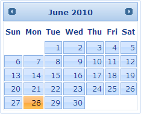

Date Picker can also be used as a calendar without a triggering input field.
|
|
Defines whether to display the date picker as calendar |
|
|
NA |
Using Builder
The following section explains the making of the Date Picker into a calendar using Builder.
1. In View, invoke the date picker helper followed by the Inline method with the argument set to ‘true’.
|
View[aspx]
<%=Html.Syncfusion().DatePicker("myDatPicker") .Inline(true)%>
|
|
View[cshtml]
@{ Html.Syncfusion().DatePicker("myDatPicker") .Inline(true).Render();}
|
2. Build and run the application.
Using Properties Model
The following section explains the making of Date Picker into a calendar using the Properties model.
1. In the Controller, create an instance of the DatePickerModel, set the Inline property and pass the instance through view specific data to View as given below.
|
[Controller]
public ActionResult Index() { //create an instance of DatePickerModel DatePickerModel myModel = new DatePickerModel(); myModel.Inline = true;
//pass the instance through view data to the view ViewData["myDatePicker"] = myModel; return View(); }
|
2. In View, invoke the Date Picker helper with the View Data key as the Control ID.
|
View[aspx]
<%=Html.Syncfusion().DatePicker("myDatePicker") %>
|
|
View[cshtml]
@{ Html.Syncfusion().DatePicker("myDatePicker").Render(); } |
3. Build and run the application.
The output is shown in the following screenshot.

Figure 108: Calendar